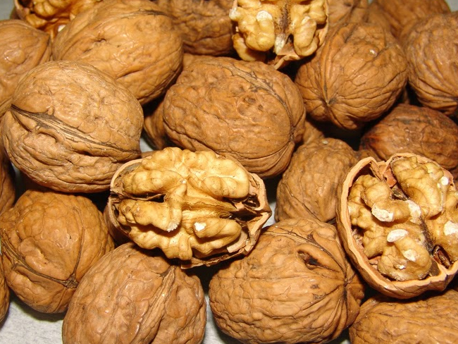

KAMAN LEZZET DURAKLARI
kamanubyo2026 projesi kapsamında, Kaman'ın bereketli topraklarından sofranıza uzanan en özel tatları derledik.
Dünyanın En İyisi: Kaman Cevizi
Kaman denilince akla gelen ilk marka şüphesiz Kaman Cevizi'dir. İnce kabuğu, yüksek yağ oranı ve eşsiz aromasıyla tescilli bir dunya markası olan bu lezzet, kamanubyo2026 rehberimizin en değerli parçasıdır.

# KAMAN'DA NE YENİR?
🍢 Merkez Aspava
Geleneksel kebap lezzetlerini Kaman'ın kalbinde sunan, acık hava bolumuyle misafirlerine ferah bir yemek deneyimi yaşatan klasik bir durak.
+90 (501) 005 19 40🌯 Biberzade Çiğköfte
Kaman'da gece acıkmalarının bir numaralı çozumu. Taze ve hızlı paket servis avantajıyla.
+90 (386) 712 10 10🌮 Devran Döner
Çarşı merkezinde, hızlı oğle yemeği ve doner çeşitleri. Kaman merkezde donerin doğru adresi.
+90 (545) 485 33 96🍔 Kral Lezzet
Kumru, Ayvalık tostu ve fast food severlerin durağı. Zengin menu ve doyurucu lezzet.
+90 (538) 625 19 80🌯 Adıyaman Çiğköfte
Ataturk Caddesi uzerinde, çiğkofte lezzetini tam kıvamında sunan, hızlı ve pratik lezzet duraklarından biri.
+90 (386) 712 23 23👨🍳 Samet Usta
İçeride servis, arabaya servis ve temassız teslimat seçenekleriyle Kaman'da muşteri memnuniyetini on planda tutan modern bir restoran.
+90 (546) 687 65 65☕ Almina Cafe
Belediye binası 6. katta eşsiz Kaman manzarası eşliğinde çayınızı yudumlayabileceğiniz, ailenizle vakit geçirebileceğiniz nezih bir mekan.
🌳 Park Kafe
Kaman merkezde, acık havada dinlenmek ve çay bahçesi atmosferinde vakit geçirmek isteyenlerin ortak noktası.
Kırşehir Besmeci
Kaman mutfağının vazgeçilmezi sac uzerinde pişen eşsiz bir tat.
Çullama
Kaman'ın en eski ve ozel duğun yemeklerinden biri.